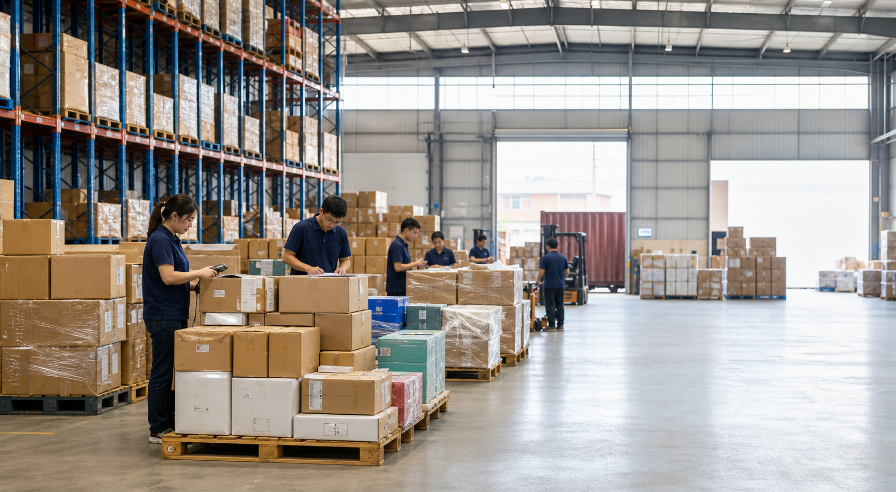

Supplier alignment
Confirm cargo-ready dates, quantities, packaging and pickup requirements.

We coordinate suppliers, pickups, warehousing, export documentation and freight execution through one accountable team in China.
Why it matters
Different production schedules, packaging standards and documents can create delays long before cargo reaches the port.
Robin Logistics gives you one operating view across suppliers, pickups, warehouse receiving, customs and carrier cut-offs.
How we manage your China operations
Confirm cargo-ready dates, quantities, packaging and pickup requirements.
Coordinate factories and truckers around warehouse and carrier cut-offs.
Receive, check, label, consolidate and prepare cargo for loading.
Align export declarations and shipping documents before departure.
Book the right route and provide milestone-based shipment updates.
Plan your next shipment